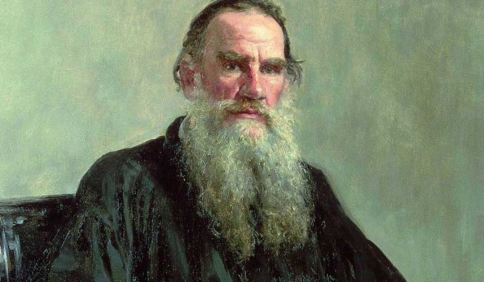

Lev Nikolayevich
Tolstoy

Russian novelist and writer of philosophical and moral texts
Fast Facts:
Leo Tolstoy
Born:
September 9, 1828 in Yasnaya Polyana, Russian Empire
Parents:
Count Nikolai Ilyich Tolstoy and Countess Mariya Tolstoya
Education:
Kazan University (began at age 16; did not complete his studies)
Selected Works:
War and Peace (1869)
Anna Karenina (1878)
A Confession (1880)
Spouse:
Sophia Behrs (m. 1862)
Notable Quote:
“Everyone thinks of changing the world, but no one thinks of changing himself.”
Died:
November 20, 1910 in Astapovo, Russian Empire